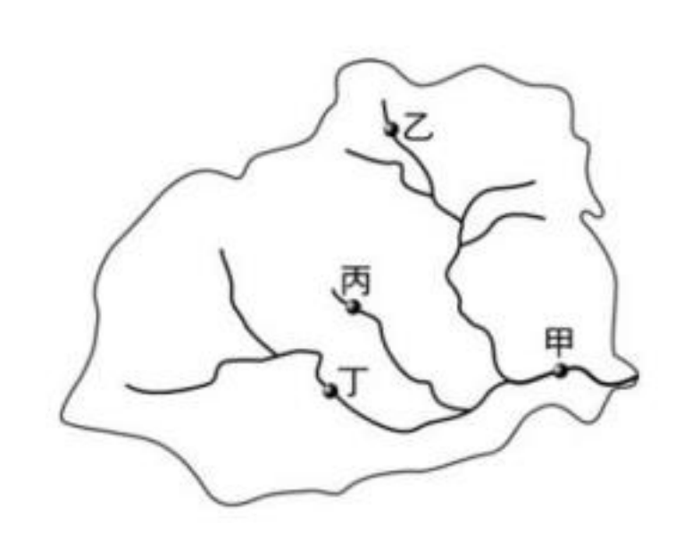
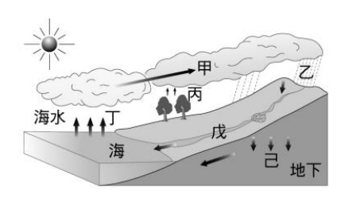
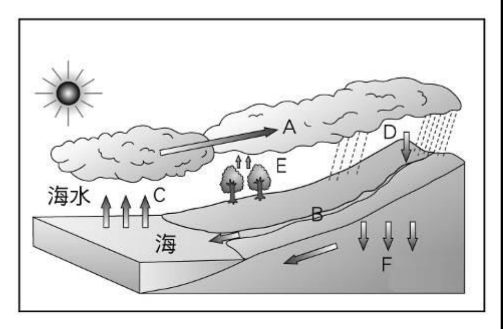
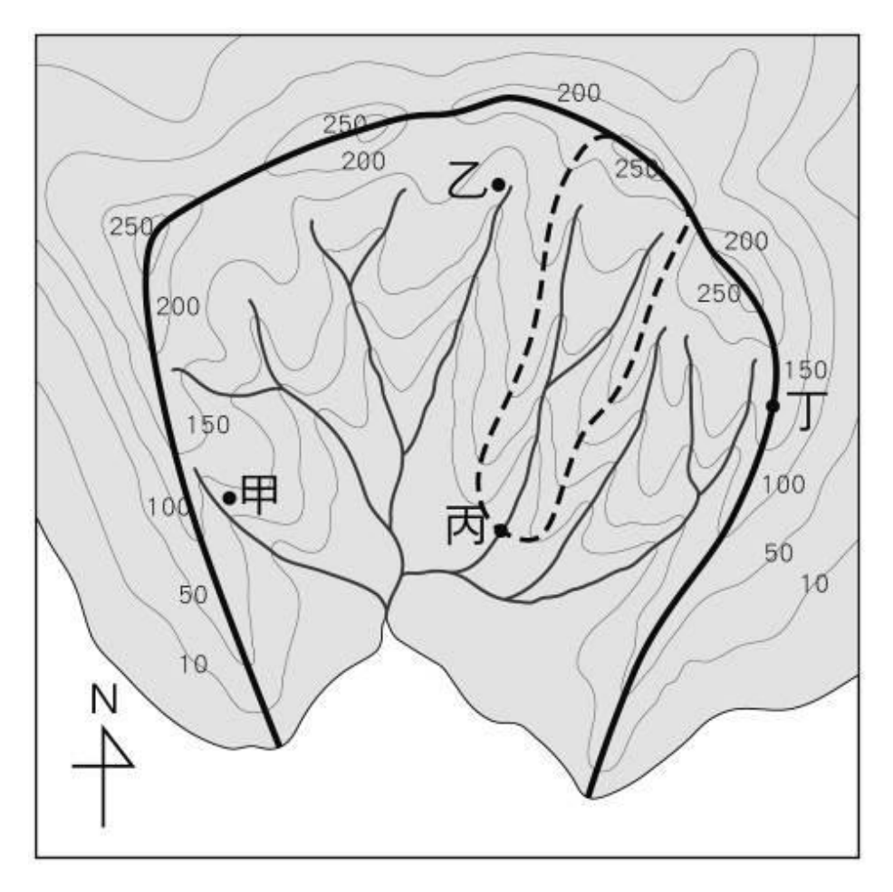
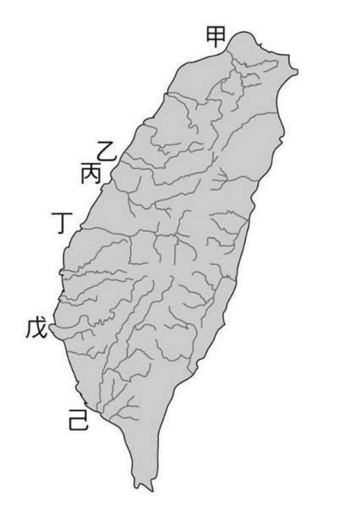
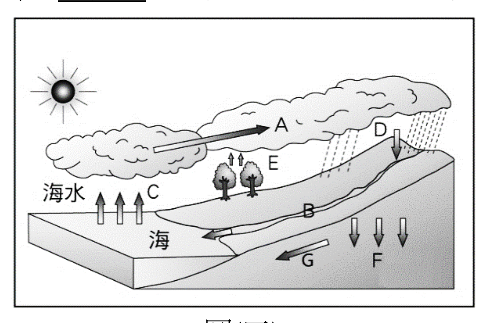
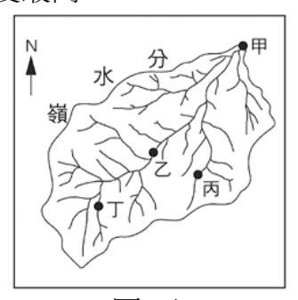
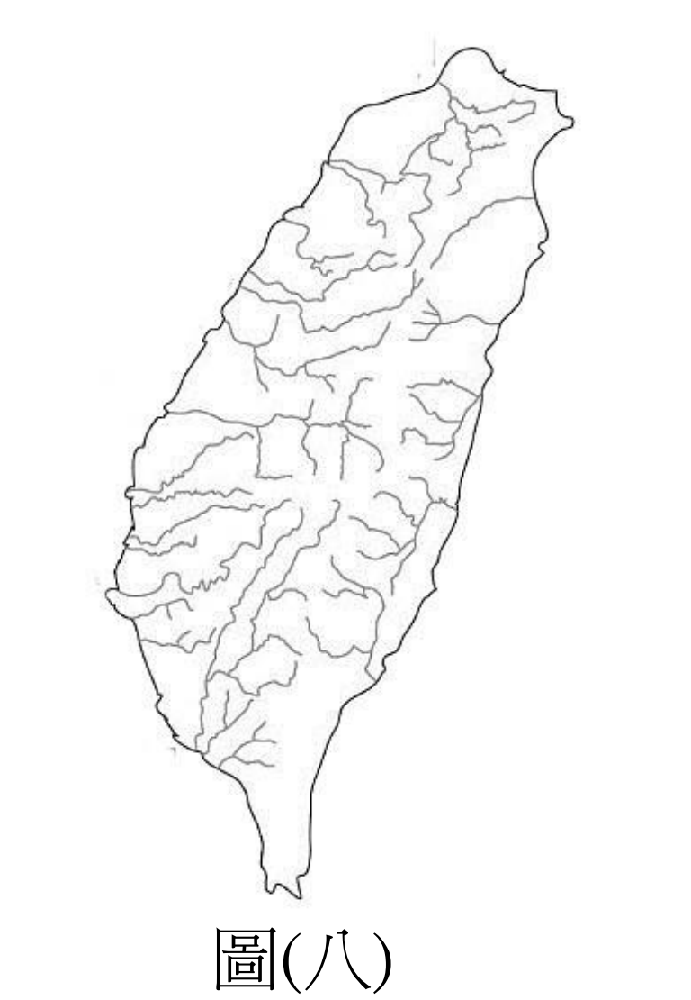
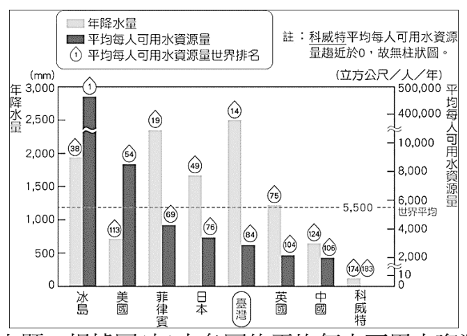
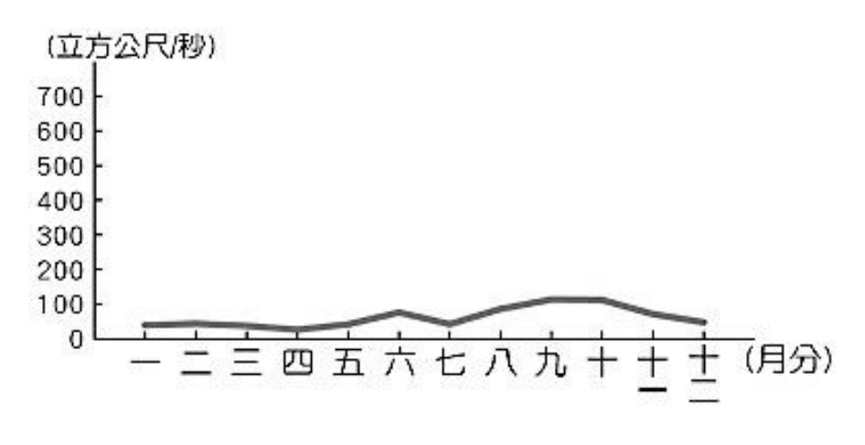

水循環・河川・水資源


先在圖(三)找出河口：河流最後從右邊甲那一頭流出去，甲在下游，乙、丙、丁在上游的支流。
(C) 丙在上游，廢水會順著水往下流，經過甲 → 甲會被汙染 ✔。
(A) 水庫要蓋在上游山谷，不在下游出海口附近；(B) 乙只收得到它上面那一小塊的水，整條河的集水範圍才叫流域；(D) 支流一路匯進來，越下游水量越大，最大的是甲。
📌 流域題第一步：找出水往哪裡流（河口在哪）。
對圖(四)：丁是海水往上＝蒸發；甲是雲被風吹著往陸地移動＝水氣輸送；乙是雨＝降水；戊是地面上的河＝逕流；己往地下＝入滲。
(A) 說「甲是蒸發」——甲是雲在移動，蒸發是丁 → 配錯 ✔。
(B)(C)(D) 都配對正確。
📌 箭頭從水面往上＝蒸發；從植物往上＝蒸散；從雲往下＝降水。
臺灣大部分地方夏雨冬乾，所以河川夏天水多、冬天水少，流量變化大。
只有北部冬天也有東北季風帶來的雨，一整年都有水 → 淡水河流量最穩定 (A) ✔。
濁水溪、高屏溪在中南部，秀姑巒溪在東部，乾季、雨季流量差很多。
📌 北部全年有雨 → 淡水河最穩。
中央山脈位置偏東，分水嶺靠近東岸。
東邊離海近，河川短；西邊要流比較遠才到海，河川長。
(B) 說「西部河川較東部短」→ 剛好說反了，錯誤 ✔。
(A) 坡陡流急、(C) 南部乾季長多荒溪、(D) 地質破碎輸沙量高，都是臺灣河川的特色。
📌 山脈偏東 → 西長東短。
西南部沿海養魚，需要大量淡水，常常超抽地下水。
地下水被抽乾後，海水會從海邊滲進地下補位，土壤和地下水都變鹹 → 土壤鹽化 (C) ✔。
（超抽地下水另一個常見後果是地層下陷。）
(A) 魚源枯竭是過度捕撈；(B) 土壤流失是山坡地開發、水土保持差；(D) 河川乾涸跟抽地下水不是直接關係。
河川長短看分水嶺離海多遠。
臺灣的中央山脈偏東：東邊山離海很近，西邊有寬廣的平原、丘陵。
所以長河大多往西流進臺灣海峽 → 原因是 (B) 山脈分布偏東 ✔。
(C) 平原比較廣的是西部，不是東部；(A)(D) 講的是雨量，跟河川長短無關。
📌 和上一題同一個觀念：山脈偏東 → 西長東短。

先把圖上的字母認出來：C 從海面往上＝蒸發；E 從樹往上＝蒸散；D 從雲落下＝降水；B 是地面上的河＝逕流；F 往地下＝入滲。
(A) 水循環的動力是太陽，不是氣壓；(C) B 是逕流不是入滲；(D) C 是蒸發不是逕流——這三個都錯。
剩下 (B)「A 是凝結」→ 卷面答案 ✔。A 這支箭頭畫在雲裡，雲是水氣遇冷凝結成的。
⚠️ 嚴格說，A 比較像雲被風吹著移動（水氣輸送），所以這題用刪去法最穩。

冬天會不會缺水，要看冬天有沒有下雨。
臺灣大部分地方夏雨冬乾，只有北部、東北部冬天迎東北季風，冬天也下雨。
四座水庫裡，翡翠水庫在臺灣北部（新北），冬天也有雨水補充 → (C) ✔。
曾文水庫在南部、牡丹水庫在最南端、霧社水庫在中部，冬天都是乾季。
📌 冬天缺不缺水，要看冬天有沒有東北季風帶來的雨。

先找方向標：上方是北。河流在圖的下方匯成一條流出去 → 主流往南流，(C) 錯。
(B) 丁點在粗黑線上，粗黑線是流域的邊界＝分水嶺 → 正確 ✔。
(A) 一個測站收得到水的範圍叫集水區，不叫水系；(D) 乙在虛線（丙的集水區）外面，乙的土石不會流經丙。
📌 水系＝主流＋支流那些「線」；集水區、流域＝收水的那一整「片」。
地下水是雨水入滲到地底下存起來的。
水泥鋪面會擋住雨水，水只能變成逕流流走。換成透水性佳的建材，雨水可以滲下去 → (A) ✔。
(B) 水庫、(D) 攔河堰是把地面的水存起來；(C) 溫泉是使用地下水，不是增加。
📌 想增加地下水，就是讓水有機會往下滲。
水庫的大問題是泥沙淤積，蓄水量越來越少。
甲：集水區做好水土保持，泥沙就不容易被沖進來——從源頭解決 ✔。
丙：水庫清淤，把沉在底下的泥沙挖出來，蓄水量增加 ✔。
乙：攔沙壩會被填滿，不是治本；丁：洩洪是颱風時為了安全，常常洩洪反而浪費水。
甲丙正確 → (D) ✔。

這是一張只有河流線條的水系圖，上面看得出：河川的長短、流向、分布。
(B) 河川東西流、(C) 西部河川較長、(D) 河川大多短小——都能從線條看出來。
(A)「水量豐穩、有航運之利」要看流量資料，一張線條圖看不出水多不多 → 無法顯示 ✔。
📌 「圖中無法顯示」的題：問自己這張圖有沒有畫那個數據。

先認圖(三)的字母：A 雲往陸地移動、B 地面上的河、C 海面往上、D 從雲落下、E 樹往上、F 往地下、G 地下水往海流。
(B) B 是降到地面的水在地面流動＝地表逕流 → 正確 ✔。
(A) 氣態水變成液態、固態，是溫度降低才會發生；(C) C 是從海面往上，是蒸發，蒸散是植物（E）；(D) D 是從雲落下的降水，不是凝結。
F 在圖上是地面以下、往下的箭頭，表示水從地面滲進土裡。
這個過程叫入滲 → (D) ✔。
(A) 地表逕流是在地面上流（B）；(B) 降水是從雲落下（D）；(C) 地下水是滲下去以後存在地底的水，它往海流的箭頭是 G。
📌 往下滲＝入滲；滲下去以後橫著流＝地下水。

先看圖(五)：北在上方，所有支流最後匯到右上角的甲，從那裡流出去 → 甲是出口、最下游。
下游一定比上游低，所以甲的地勢最低 → (B) ✔。
(A) 主流加支流叫水系，流域是收水的整片範圍；(C) 甲在最下游，整個流域的水都經過它，甲的集水區才最廣；(D) 圖上沒有標高度，只看得出越上游越高；丙不在最上游，說它最高沒有根據。
📌 越下游：越低、收的水越多。
臺灣雨很多，水卻不夠用，原因有兩個：
①坡陡流急，雨水很快流進海裡，留不住；②降水時空分布不均，雨集中在夏天和山區 → (A) ✔。
(B) 臺灣用水以地面水（河川、水庫）為主；(C) 南部乾季長，缺水通常比北部嚴重；(D) 地下水也有限，超抽會造成地層下陷，不能當成穩定的工業水源。

圖(八)是一張只畫河流線條的臺灣水系圖。
只有河流線條的圖，看得出河川短小、東西分流、西部較長。
(A)「北部流量穩定、南部變化大」要有流量的數字，線條圖畫不出來 → 無法顯示 ✔。
📌 和 113 學年那一題一模一樣：水量、流量要看統計圖，水系圖只看得到線。

圖(九)：臺灣的年降水量（淺色柱）很高，但每人可用水量（深色柱）很少。
雨多、每人分到的卻少，原因是：乙 人口密度高，很多人分；丙 河川流速快，雨水很快流進海，留不住。
乙丙 → (D) ✔。
甲「降水量豐沛」是好事，不會讓水變少；丁暖化在這張圖上看不出來。
看深色柱（平均每人可用水資源量）：美國的深色柱明顯比臺灣高 → (B) ✔。
(A) 臺灣的淺色柱（年降水量）是圖上數一數二高的，不是較少；(C) 圖上只有「每人」的量，看不出人口總數；(D) 日本的深色柱比臺灣高，臺灣比較少。
📌 雙柱圖先看清楚哪個顏色代表什麼，再比。
水庫淤積的泥沙，是從上游集水區被雨沖下來的。
做好集水區的水土保持（種樹、少開發山坡地），泥沙就少，水庫壽命就長 → (D) ✔，這是治本。
(A) 攔砂壩會被填滿，是治標；(B) 堤防是防洪用的；(C) 「禁止」流域內所有開發不切實際，流域範圍太大，很多人住在裡面。
📌 和 113 學年那題同一個觀念：水土保持是治本。
另有 2 題只能看不能作答（選項本身是圖，或原卷用的是表格）
